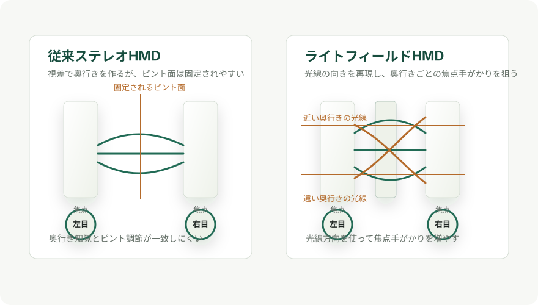

XR / Display
NHKのライトフィールドHMDは何を解決しようとしているのか
NHK放送技術研究所は、ライトフィールド方式を採用した薄型HMDを2026年5月に発表しました。 狙いは、VRで起きやすい「奥行きは近く見えるのに、目のピントは固定面に合う」問題を、光学的に軽減することです。
結論
ライトフィールド式HMDは、左右の視差だけで立体感を作る従来型VRに対して、目に届く光線の向きまで再現しようとする方式です。 見たい奥行きへ自然にピントを合わせられる可能性があるため、視覚疲労や不快感を減らす有力な方向性とされています。
NHK技研の2026年試作機のポイントは、レンズアレーと接眼レンズを接触配置する独自光学系です。 従来構成で必要だった約4cmの間隔をなくし、中間像を介さず3次元映像を目へ届けることで、光学系の奥行きを従来比79%削減したと発表されています。
一方で、ライトフィールド方式は万能ではありません。 光線の方向情報を増やすほど、空間解像度、視野角、計算量、ディスプレー画素密度の間で厳しいトレードオフが出ます。 そのため現時点では、製品化済みの一般向けVRヘッドセットというより、長時間視聴に耐える次世代HMDを目指す研究開発段階の技術として見るのが妥当です。
従来VRが疲れやすい理由

多くのVR HMDは、左右の目に少し違う映像を見せる二眼視差で立体感を作ります。 しかし、目が実際にピントを合わせる先は、レンズで拡大されたディスプレー面または固定の虚像面です。 近くに見える仮想物体へ目を寄せても、ピント調節は固定距離に残るため、輻輳調節矛盾が起きます。
この矛盾は英語ではVergence-Accommodation Conflict、略してVACと呼ばれます。 VACのレビュー論文では、従来の立体ディスプレーが単一焦点面に仮想像を提示するため、人間の調節知覚を満たせないことが課題として説明されています。
ライトフィールド式とは何か
ライトフィールドは、物体から目に届く光線の集合を扱う考え方です。 普通の2Dディスプレーが「その画素が何色か」を主に出すのに対し、ライトフィールド表示では「どの位置から、どの方向へ、どの色の光が出るか」を再現しようとします。
HMDでこれがうまく機能すると、目は実世界と同じように、近い仮想物体には近い物体として、遠い仮想物体には遠い物体としてピントを合わせやすくなります。 NVIDIA ResearchのNear-Eye Light Field Displaysも、収束、調節、両眼視差、網膜ぼけといった奥行き手がかりを提示できる薄型HMDの方向性として説明されています。
今回集めた主なデータ
| 項目 | 確認できた内容 | 読み取り方 |
|---|---|---|
| 発表主体 | NHK放送技術研究所 | 技研がライトフィールド方式HMDの研究を継続している。 |
| 発表日 | 2026年5月21日 | 技研公開2026の直前に、新しい薄型試作機として発表された。 |
| 展示 | 技研公開2026、2026年5月28日から31日 | 会場で実機装着による体験展示が案内された。 |
| 方式 | ライトフィールド方式 | 目へ届く光線の集合を再現し、奥行きごとのピント手がかりを与える。 |
| 薄型化の鍵 | レンズアレーと接眼レンズの接触配置 | 光線制御と集光を実質的に1枚の光学素子として扱う構成。 |
| 従来課題 | 従来構成ではレンズアレーと接眼レンズの間に約4cmの間隔が必要 | 中間像を作ってから拡大する構成がHMDの大型化につながっていた。 |
| 削減率 | 光学系の奥行きを従来比79%削減 | 中間像を介さず、遠方に直接3次元映像を形成する設計の効果。 |
| 寸法の目安 | 発表図では従来側約49.8mm、新構成側約10.5mmと読める | 公式本文の数値は79%削減。寸法値は公開図からの読み取りとして扱う。 |
| 表示処理 | レイトレーシングによる要素画像の高速生成 | 光線の経路を追跡し、3次元映像を作る光線情報をリアルタイム生成する。 |
| 今後の課題 | 高精細化と表示範囲の拡大 | NHKは教育、医療、エンタメなどへの応用を見据えて改良予定としている。 |
NHK試作機の光学的な工夫
従来のライトフィールドHMDでは、ディスプレーとレンズアレーでいったん空中に中間像を作り、それを接眼レンズで拡大します。 この構成は焦点手がかりを出すには有効ですが、レンズアレーと接眼レンズの間隔が必要になり、HMDが厚くなります。
NHKの新構成では、レンズアレーと接眼レンズを接触させ、光線制御と集光を同時に行います。 さらに、その光学系に合う要素画群像の生成手法を組み合わせ、中間像を作らず直接3次元映像を目へ届ける設計にしています。 ここが2026年発表の中心的な新規性です。
ただし、薄型化だけで体験品質が決まるわけではありません。 ライトフィールドHMDは、見る位置の許容範囲、視野角、奥行き範囲、空間解像度、計算負荷が互いに絡みます。 NVIDIAの研究でも、解像度、視野角、被写界深度、フォームファクター、目の移動範囲の間に基本的なトレードオフがあると整理されています。
関連する流れ
- 2013年、NVIDIA Researchはマイクロレンズアレーを使ったNear-Eye Light Field Displaysを発表し、薄型HMDと調節手がかりの両立を研究テーマとして示しました。
- 2015年、Stanford Computational ImagingのLight Field Stereoscopeは、焦点手がかりが長時間VR体験の快適性に重要であることを前提に、複層パネルによる近眼ライトフィールド表示を提案しました。
- 2017年、JDIとNHKメディアテクノロジーは8K液晶をベースにした17型ライトフィールドディスプレイを発表し、裸眼3D表示の方向でライトフィールドを扱っていました。
- 2022年、NHK技研はライトフィールドHMDを公開し、従来HMDの視差とピントのずれを軽減する方向性を示していました。
- 2026年、NHK技研はレンズ接触配置と高精細マイクロディスプレーにより、薄型化と高精細化を進めた試作機を発表しました。
他方式との違い
| 方式 | 考え方 | 強み | 弱み |
|---|---|---|---|
| 従来ステレオHMD | 左右視差で奥行きを作る | 実装しやすく、現在のVRコンテンツ資産と相性がよい。 | ピント位置が固定されやすく、VACが残る。 |
| 可変焦点 | レンズや表示面の焦点距離を視線に応じて変える | 解像度を比較的保ちやすい。 | 視線追跡、可動光学系、遅延制御が難しい。 |
| 多焦点面 | 複数の奥行き面に映像を出す | 設計次第で焦点手がかりを段階的に与えられる。 | 面の数、明るさ、重なり、遮蔽表現が課題になる。 |
| ライトフィールド | 目に入る光線の位置と方向を再現する | 奥行きごとのピント手がかりを自然に出しやすい。 | 画素、視野角、計算量、光学系の制約が厳しい。 |
| ホログラフィー | 波面を再現して3次元像を作る | 理想的には非常に自然な3D表示に近づける。 | 計算量、光学素子、表示デバイス、ノイズが大きな課題。 |
向いている用途
NHKが挙げる応用先は、教育、医療、エンターテインメントなどです。 これらに共通するのは、短時間のゲーム的な利用よりも、対象をじっくり見たり、奥行きの理解が重要だったり、視覚疲労が体験の継続性を左右したりする点です。
- 医療や教育で、立体構造を自然な奥行き感で観察する。
- 放送・展示・文化財アーカイブで、長時間見ても疲れにくい3D鑑賞を目指す。
- 遠隔体験やエンタメで、近距離の仮想物体を自然に見せる。
- 研究用途として、VAC低減が行動、視聴時間、没入感に与える影響を評価する。
現時点の注意点
- 2026年6月5日時点では研究試作機であり、一般販売の製品ではありません。
- 公式本文で確認できる主な数値は、約4cmの従来間隔、79%の光学系奥行き削減、技研公開2026の展示日程です。
- 公開図から10.5mm程度の光学系奥行きが読み取れますが、本文に仕様表として列挙された数値ではないため、記事内では「目安」として扱います。
- 視覚疲労の低減は方式上期待される効果であり、量産機での快適性は視野角、重量、明るさ、遅延、コンテンツ品質にも依存します。
- ライトフィールド表示は、表示デバイス側の画素数を光線方向にも割り当てるため、見た目の解像度を保つには高精細マイクロディスプレーが重要になります。
参照URL
- NHK: 自然で疲れにくい３次元映像を表示できる薄型ライトフィールドヘッドマウントディスプレーを開発
- NHK: 「NHK 技研公開2026」と「NHK TECH EXPO 2026」の見どころと展示ラインナップ
- Mogura VR: NHK Science & Technology Research Laboratories develops a thin, light-field VR headset
- Newsshooter: NHK Broadcasting Technology Research Laboratory Light Field Head-mounted Display
- ITmedia NEWS: VR空間で現実の見え方を再現する「ライトフィールドHMD」、NHK技研が公開へ
- NVIDIA Research: Near-Eye Light Field Displays
- Stanford Computational Imaging: The Light Field Stereoscope
- Results in Optics: Vergence-accommodation conflict in optical see-through display: review and prospect
- AV Watch: JDI、8K液晶ベースの裸眼立体視ライトフィールドディスプレイをNHK-MTと共同開発